Unless stated otherwise, use the approximation \(\frac{22}{7}\) for \(\pi\) .
- Find the area of a sector of a circle with radius 7 cm if the angle of the sector is \(60 ^{\circ}\) .
- Find the area of a quadrant of a circle whose circumference is 44 cm.
- The length of the minute hand of a clock is 7 cm. Find the area swept by the minute hand in 10 minutes.
- A chord of a circle of radius 10 cm subtends \(90 ^{\circ}\) at the centre. Find the area of the corresponding: (i) minor sector (that subtends \(90 ^{\circ}\) at the centre), and (ii) major sector (that subtends \(270 ^{\circ}\) at the centre). (Use \(\pi \approx 3.14.)\)
- A chord of a circle of radius 15 cm subtends an angle of \(60 ^{\circ}\) at the centre of the circle. Find the areas of the corresponding minor and major segments of the circle. (Use \(\pi \approx 3.14\) and \(3 \approx 1.73.)\)
- A car has two wipers which do not overlap. Each wiper has a blade of length 28 cm and sweeps through an angle of \(120 ^{\circ}\) . Find the total area cleaned at each sweep of the blades.
*7. A chord of a circle of radius r subtends an angle of \(60 ^{\circ}\) at the centre of the circle. Show that the area of the corresponding minor _{2} 3 segment of the circle is equal to \(\pi r \frac{1}{6}\) \(- 4\) . *8. An equilateral triangle is inscribed in a circle of radius r. Show that the ratio of the area of the triangle to the area of the circle is
equal to \(\frac{3\sqrt{3}}{4\pi} \approx 0.413\).
- *A square is inscribed in a circle of radius r. Show that the ratio of the area of the square to the area of the circle is equal to \(\frac{2}{\pi} \approx 0.637\).
- *A hexagon is inscribed in a circle of radius r. Show that the ratio of the area of the hexagon to the area of the circle is equal to \(\frac{3\sqrt{3}}{2\pi} \approx 0.827\). Can you see why the answer is exactly twice the answer to Question 8?
End-of-Chapter Exercises
In the problems below, unless stated otherwise, use the approximation \(\frac{22}{7}\) for \(\pi\).
- Identities in algebra can sometimes be shown as area relationships. For example:
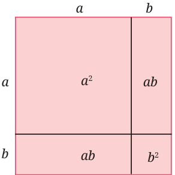
The figure shown corresponds to the identity \((a + b)^2 = a^2 + 2ab + b^2\). Do you see how?
Fig. 6.41: Area model of an identity
Draw figures corresponding to the identities \((a + b)(a - b) = a^2 - b^2\) and \((a + b + c)^2 = a^2 + b^2 + c^2 + 2ab + 2bc + 2ca\).
- An isosceles triangle has perimeter 40 cm; the equal sides are 15 cm each. Find the area of the triangle.
- An isosceles triangle has base 10 cm, and its area is 60 cm\(^2\). What are the lengths of the equal sides?
- The area of a right-angled triangle is 54 sq. cm. One of its legs has length 12 cm. Find its perimeter.
- The sides of a triangle are in the ratio 2: 3: 4, and its perimeter is 45 cm. Find its area.
- The sides of a triangle have lengths 7 cm, 24 cm, 25 cm. Find the area of the triangle in two different ways.
- If the wheel of a bicycle has a diameter of 60 cm, find how far a cyclist will have travelled after the wheel has rotated 100 times.
- Find the area of a quadrant of a circle whose circumference is 66 cm.
- The wheel of a car has an outer radius of 28 cm. Calculate how far the car travels after one complete turn of the wheel, and how many times the wheel turns during a journey of 1 km.
- *Two rectangles have the same area and the same perimeter. Does this mean that they are congruent to each other?
- You know that the area of a parallelogram is base \(\times\) height. Using this and the figure, show that the area of a trapezium is half the sum of the parallel sides \(\times\) height, i.e., \(\frac{1}{2}(a + b)h\).
- By dividing a trapezium into two triangles show that its area is, half the sum of the parallel sides multiplied by the height (the same formula as the one given above).
- Show how we can use two identical copies of a trapezium to make a parallelogram. How will this give us the formula for the area of a trapezium?
- Show that the area of a kite is half the product of its diagonals. Show this: (i) using algebra, and (ii) using geometry.
- Three problems about fitting congruent shapes together:
- Rectangle ABCD has sides a, b, and rectangle PQRS has sides 2a, 2b. Show that PQRS has 4 times the area of ABCD. Does this mean that 4 copies of rectangle ABCD will fit into rectangle PQRS? Check and see!
- \(\triangle ABC\) has sides a, b, c, and \(\triangle PQR\) has sides 2a, 2b, 2c. Show that \(\triangle PQR\) has 4 times the area of \(\triangle ABC\). Does this mean that 4 copies of \(\triangle ABC\) will fit into \(\triangle PQR\)? Check and see!
- \(\triangle ABC\) has sides a, b, c, and \(\triangle PQR\) has sides 3a, 3b, 3c. Show that \(\triangle PQR\) has 9 times the area of \(\triangle ABC\). Does this mean that 9 copies of \(\triangle ABC\) will fit into \(\triangle PQR\)? Check and see!
- Use the above to make a conjecture about the area occupied by circles fitted into a rectangle in the manner shown. Test your conjecture for particular cases: 10 circles; 20 circles; 50 circles. Then prove your conjecture!
- \(\pi\) is the constant circumference to diameter ratio for all circles, and is approximately equal to \(\frac{22}{7}\) or 3.14.
- The circumference of a circle is given by \(C = 2 \pi r\), where r is the radius of the circle.
- The arc length of a circle is given by \(l = 2\pi r \times \frac{\theta°}{360°}\), where θ is the central angle.
- The area of a triangle is given by \(A = \frac{1}{2} \times \text{base} \times \text{height}\).
- Heron’s formula for the area of a triangle in terms of its sides a, b, c: area = s(s - a)(s - b)(s - c). where \(s = s = \frac{1}{2}\) (a \(+ b +\) c).
- The area of a circle is given by \(A = \pi r^2\).
- Estimates for \(\pi\) : Archimedes: \(3 \frac{10}{71} < \pi < 3 \frac{1}{7}\) ; Chongzhi: \(\pi \approx \frac{355}{113}\) ; Āryabhaṭa: \(\pi \approx 3.1416\); Mādhava’s exact formula: \(\pi = 4 (1 - \frac{1}{3} + \frac{1}{5} - \frac{1}{7} +\) …).
- \(\pi\) is an irrational number.
- The area of a sector of a circle is given by area \(= \pi r^2 \times \frac{\theta°}{360°}\), where θ is the central angle.
- Brahmagupta’s formula for the area of a cyclic quadrilateral in terms of its sides a, b, c, d: area s a s b s c s d . where \(s = \frac{1}{2}\) (a \(+ b + c +\) d).
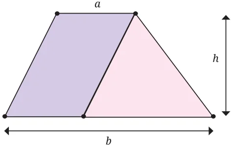
Fig. 6.42: Trapezium: sides a and b, height h *16.
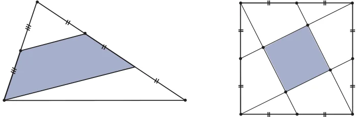
Fig. 6.43: What fraction of the Fig. 6.44: What fraction of the triangle is shaded? square is shaded?
17.
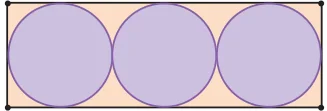
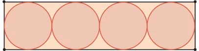
Fig. 6.45: What fraction of Fig. 6.46: What fraction of the rectangle is covered by the rectangle is covered by the circles? the circles?
*19. The figure shows nine identical rectangles fitted together to make a large rectangle whose area is 72 cm\(^2\). Find the perimeter of each small rectangle.
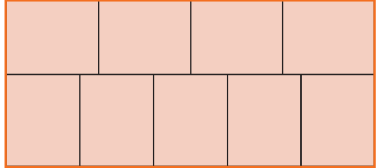
Fig. 6.47: Nine identical rectangles stacked together *20. Show that the areas of the shaded blue triangle and the shaded red triangle are equal. Find a way of cutting up the blue triangle into some number of pieces and rearranging the pieces to cover the red triangle.
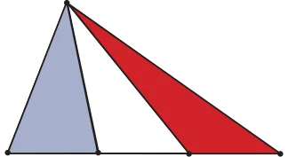
Fig. 6.48: Lines from a vertex to the points of trisection of the opposite side *21. The figure shows a quarter circle in a square. Its centre is at one vertex, and it passes through two adjacent vertices. There are two semicircles on two adjacent sides as diameters. They create the shaded regions A and B . Show that A and B have
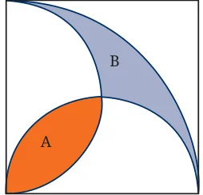
Fig. 6.49: A quarter circle and two semicircles equal area. *22. In Fig. 6.50, four semicircles have been drawn within the given square whose side is 2 units. The centres of these semicircles are the midpoints of the sides. They create a 4-petalled flower (shown in blue). Find the perimeter and Fig. 6.50 the area of this flower.
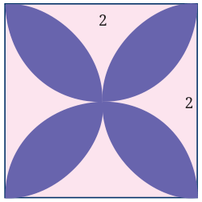
*23. In Fig. 6.51 we see two concentric circles with a common centre O. A chord BC of the larger circle is drawn, touching the smaller circle at A. The length of BC is l. Show that the area of the green region enclosed between the two circles is \(\frac{1}{4}\pi l^2\).
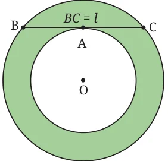
Fig. 6.51 *24. In Fig. 6.52, semicircles have been drawn on all the sides of a right-angled triangle as shown. Show that Area (A) + Area (B) = Area (C).
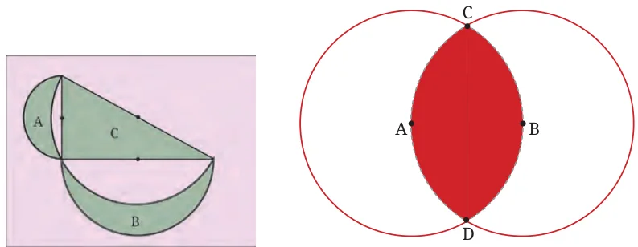
Fig. 6.52 Fig. 6.53: Two congruent circles, radius r *25. Fig. 6.53 shows two circles passing through each other’s centres. Find the area of the region enclosed by the two circles in terms of the common radius r.
*26. In Fig. 6.54, we see three triangles within a rectangle. The areas of the triangles are A, B, C, as marked. Show that the area of the rectangle is \(\frac{2(A + C)(B + C)}{C}\).
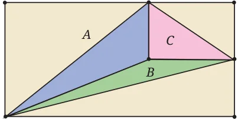
*27. In the figure we see two shaded regions formed by a quarter circle, a semicircle, and a triangle.
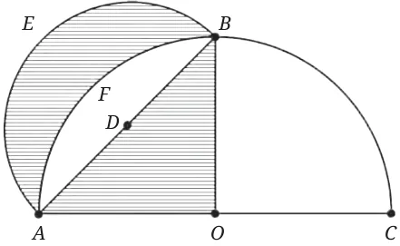
Fig. 6.55 Show that the areas of the two shaded regions are equal.
Chapter Summary